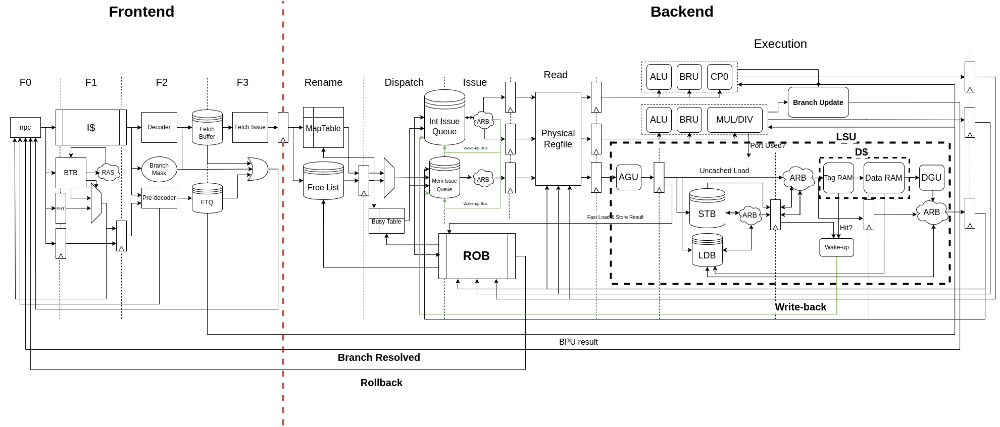
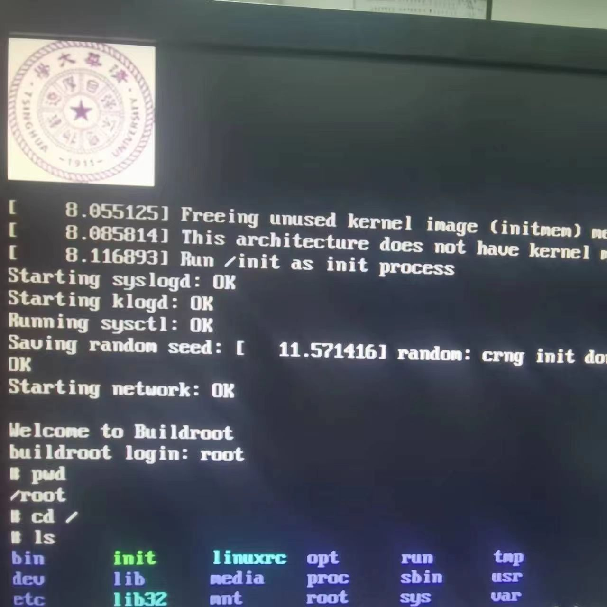

龙芯杯比赛回顾#
2022年第六届龙芯杯如期举办，经过将近三个月的奋战后， Vivado2019.3 队最终在决赛中获得团体赛一等奖。
决赛已经过去了一个月，我写 C 和 Rust 代码时还是会习惯性地加上 beign 和 end。
去年在上计原（计算机组成原理）课时，我只在学校的 thinpad 板子上跑起来了 uCore，当时紧锣密鼓地调了三天，感觉非常有趣，但总觉得还不够圆满，于是决定参加第二年的龙芯杯。 今年二月份，在老师和学长的号召和讲解下，我对这个比赛有了一定的了解，和丁神、文博思、徐晨曦组队并开始针对比赛做一些准备工作。 我大概用一周的时间复现了计原课的内容，这次是MIPS，而不是 RISC-V，开学之后又过了几周才在 thinpad 上运行完整的监控程序。
硬件描述语言
System Verilog 用起来还是很方便的，至少相较于 Verilog 有了结构体封装。 尽管如此，在开发过程中还是遇到了很多令人困惑的问题。比如无法跨文件定义过程，不能顺利采用 package 的方法； 再比如一些逻辑表达式放在 xsim 仿真器里就会计算错误（保持低电平）； 再比如缺这个语言本身少完善的生态，只有最基本的文件内代码提示，代码报错也极为局限，在改动比较多的时候，每次正常运行前都要进行半天的调试 （后来采用 verilator 效率提高很多，主要是编译后给出的 warning 和 error 更全面）。 总而言之，综合考虑语言的学习成本和项目的开发成本时存在一个临界点，对于小项目来说， Verilog 的语法可能更方便； 但是对于比较大型的项目来说，基于 scala 的 SpinalHDL 和 Chisel 是更好的选择。
这时候大家其实比较放松，因为距离比赛正式开始还早，在对 MIPS 体系有基本的了解后，我就开始去看那本《超标量处理器设计》了。 《超标量处理器设计》 这本书可谓是圣经，里面或详或略地介绍了大部分现代乱序处理器的设计思想，在对乱序处理器有一个大致的了解后， 再针对实现细节和优化方向去查资料就会更容易一些。
在一开始的几次和学长的讨论中，往年大多数队伍都实现了顺序双发射架构，所以今年打算在架构上更进一步去实现乱序架构。 同时我们也意识到很多问题，比如乱序处理器里面有很多缓冲，需要需要占用大量 FPGA 资源，对于主频不是很友好； 而且乱序执行带来了调试的难题，对于后续的系统调试十分不利。 讨论的结果是我一直在纠结是仍然实现顺序多发射架构，还是走一条没人走过的道路（历届还没有队伍实现乱序处理器并启动 Linux ）。
学期中，大家都有各种课程或者推研的事情，所以比赛也是一度没有任何进展。直到学期末，我完成了几门课的大作业后，开始下定决心实现乱序 CPU。 刚好丁神实现了 Icache，我在这个的基础上先实现了一个简单的能取指令的前端，然后开始着手写寄存器重命名、发射队列、重排序缓存这些最关键的部分。 在六月初的时候，CPU 可以乱序执行基本的整数指令了，调试起来存在一些困难，但是我看到了希望，我开始相信乱序处理器启动 Linux 是可以走得通的。 这个时候的我对于主频还没有太多概念，只是想着尽快把功能实现好（后来调性能的时候很痛苦）。
进入暑假之后，我和丁神，文博思都没有回家，每天除了吃饭睡觉外基本上一直在写代码和调试。dsf 在实现好 Dcache 后决定开始移植 Difftest。
重要决定之一：Difftest
到我们调出一个比较可观的性能分和稳定通过功能测试、性能测试的版本时，距离决赛截止只剩下不到二十天了，靠 ILA 肯定是无法跑起来 Linux 的。 这里丁神跑去搞 Difftest，虽然意味着我必须完成接下来的 CPU 代码，但 System Verilog 硬件开发最大的问题就是无法并行化， 几个人一起写缺少过程的代码无疑是一种折磨。
六月末的时候，我完成了乘除运算单元代码的编写，开始着手访存单元，这一部分也是乱序处理器中最难实现也最影响性能的部分。 RISC-V Boom 采用了完全乱序的访存，看过源码后，我觉得完全乱序带来的资源开销太大了，不适合在 FPGA 上实现，而且调试起来极为困难，于是决定采用访存部分乱序的设计。
七月初，文博思搭建好了比赛的测试环境，我们开始运行功能测试。果不其然，运行大规模程序的调试难度不是标量处理器能比的。 由于之前我只使用了一些非常小的测例，设计中还有很多边界问题没有解决，我大概用了一周的时间才跑通功能测试。 开始调试功能测试的时候，我发现我们的框架存在巨大的问题，最初的设计不够严谨，比如指令拆分和分支处理都放在了解码阶段，众多信号混在一起，反复调了很多次都没办法顺利跑通。 而且 MIPS 的延迟槽也给乱序处理器设计带来了诸多困难，前端对于延迟槽的处理也十分粗糙，严重影响了性能。 这时候为了便于调试，使设计逻辑更加清晰，我增加了一个流水段和解码缓存用于整流和指令拆分。
然而开始调试性能测试的时候，我才意识到我们仍然存在大量问题没有解决。首先是主频只能达到 60M，重命名阶段查询 free list 和写回 map table 的逻辑严重影响了主频，于是我决定先对这一部分进行重构。
重要决定之二：两级重命名
在最初的设计中，我的实现是同一个流水段中进行读 free list 和写 map table 操作； 然而在阅读 RISC-V Boom 的源码时，我注意到重命名是拆成两个阶段的，受到这个实现细节的启发，我对重命名阶段和分发阶段进行了重构， 将写回 map table、为 free list 创建快照等操作延迟到分发阶段处理，并加入了前传逻辑确保寄存器读写的正确性。
在7月11日这天，我们的 CPU 主频终于达到了 100M。接下来就是 IPC 的优化。加入分支预测单元后，我发现我们的真实 IPC 特别低， 即使分支预测的准确率达到 90% 以上，IPC 还是不够理想。反复查看波形和测例源码后，我发现 CPU 在执行过程中存在大量的气泡， 对于部分分支比较密集的测例，现有的设计并不能发挥四发射的优势。而且我还发现对于几个重要的 bug，仅靠简单的修复是不能从根本上解决问题的， 即使暂时通过了测例，也无法获得理想的性能。到了七月下旬，在时间越来越紧张的时候，我决定进行大规模重构。 在几乎对整个流水线进行重构的过程中，我的精力也是差不多到了极限，因为我们还没有开始运行各种系统，眼看着决赛将至，性能却仍差强人意。 但是我坚信丁神那边正在移植的 Difftest 一定能给系统调试带来质的变化，在队友们的支持下，我开始了漫长的重构。
重要决定之三：二取指三发射
我决定采用二取指三发射的设计，主要受到了以下几个因素的影响：
往届中有实现乱序处理器的队伍，他们采用了二取指架构并在某些测例上获得了非常好的 IPC；
Nontriial MIPS 前端对于延迟槽的处理非常优雅，巧妙地将这个违反乱序处理器理念的设计转化成了一种优化方法。他们的前端也是二取指结构；
测例中有很多都是以循环为代码主体，频繁的分支跳转会引入大量气泡；
采用二取指后逻辑会变得更加简单，可以将之前设计中的解码阶段合并到前端第三级中；
重构之后又经过两天时间，我重新跑通了功能测试和性能测试，而且性能测试的 IPC 终于达到基本的预期，某些测例的 IPC 也是成功突破了 1，真正开始体现出一些超标量处理器的优势。 然而在某些访存密集的测例中，IPC 与预期仍存在很大的差距。经过和队友的讨论后，接下来的几天时间我又对访存单元进行了大规模的重构。
重要决定之四：Cached Load 提前唤醒
我观察到很多访存密集的测例在经过编译器优化后，访存模式基本为先读后写，在部分乱序的访存中，写必须顺序发射，且读和写之间是不能乱序的。 此外，为了对 MIPS 中的 Uncached Load 进行处理，引入了 Load Buffer 这一设计，与 Store Buffer 类似，但是 Load Buffer 的一系列操作延长了 Cached Load 的流水线级， 造成这些指令不能及时地对后续指令进行唤醒。因此需要对 Cached Load 单独进行处理，增加对于 Store、Uncached Load、Cached Load 这三者的仲裁。
距离决赛还有十多天的时候，我们开始准备运行系统。在丁神移植的 Difftest 的帮助下，我们用几天的时间就在板子上成功运行 uCore 和 uboot。 在这之中，我记忆最深的一个 bug 是有关中断和访存的交互的，由于当时 Difftest 还没有写完，我盯着代码想了三个小时，最后通过枚举各种可能出现的情况定位了这个 bug。 利用丁神完善 Difftest 的空闲时间，我也终于将 CPU 最终版本的数据通路绘制出来：

在比赛接近尾声的时候，我们几乎以一天一个 bug 的速度进行调试，终于在提交的前一天成功运行起 Linux 和 BusyBox，并通过 VGA 看到了显示屏上的输出。
{kind=link}

最后一天提交的时候也是出现了小问题：由于提交包和发布包存在细微的差别（修复了一个 bug，这个 bug 恰好是我们向官方提出来的）， 使用发布包的代码综合实现，我们最终的主频达到了 120M，性能分也达到了 84 分，但是使用提交包后，主频就只能达到 115M，虽然有些遗憾，但是影响并不大。
Vivado
关于 Vivado 就不做过多评价了（用过的都懂），比赛时间内确实无法熟练掌握这个软件的用法和标准的硬件开发流程； 实际上，我们只用到了其中一小部分的功能，比如通过 Timing Reports 查看关键路径来优化时序，参考往年的配置搭建最简单的 Soc 等； Vivado 的综合和实现非常玄学，里面应用了很多随机算法，导致会出现提高主频反而能通过时序的现象。
今年的决赛仍以线上的方式举办，答辩前一天有一个现场答题的环节，去年给了非常复杂的 filter 指令，今年则比较友好，变成了简单的运算指令。 我们答辩抽到了后面几个组，答辩时间是在下午，整个过程都比较顺利，丁神声情并茂地对 ppt 进行了讲解。 提问环节中，评委老师问的问题大多数是关于 CPU 的设计细节，也问到了一些关于架构选择和参数优化的问题，在整个比赛过程中， 架构的调整都是进行到某一个阶段必然的结果，对于这一部分我们缺少更科学严谨的分析方法，但至少是尽可能地朝着性能更高的方向努力。
比赛感想#
我觉得这几个月是我本科期间度过的最辛苦也最充实的时光，一次一次地被困难阻挡，又一次一次地打通道路。 我进入大学以来第一次如此深入学习和研究计算机知识，体会到了现代处理器是无数前辈们智慧的结晶，一款 CPU 从设计到测试再到投入应用是一件多么困难的事情！ 如果没有几位队友的支持和共同的努力，我们无法取得这样的结果。个人的能力和精力是有限的，但团队的力量是无限的。
感谢丁神果断的决策和战略眼光，将不可能化为了可能； 感谢杰哥、高一川学长、黄嘉良学长、Harry Chen学长耐心地为我们答疑解惑，鼓励我们坚持不放弃； 感谢 ZenCove 队的崔轶锴和张为同学在交流中提供的帮助； 感谢康总、李山山老师、陆游游老师、刘卫东老师、陈渝老师提供的支持和指导！